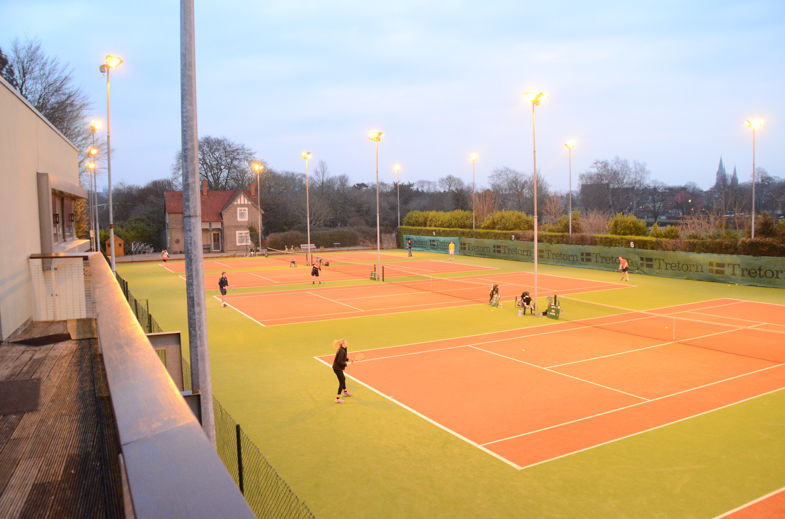

UCC Tennis
I train with UCC Tennis Club every Sunday from 21:00 to 22:15. We train in Sundays Well Tennis Club. I train in the 'Advanced Intermidiates' category, so as you could expect, the standard every week is quite high.
For me, playing with very talented players allows me to improve week on week. The club has 8 courts, which allows each member to play games without having to sit out for too long.
